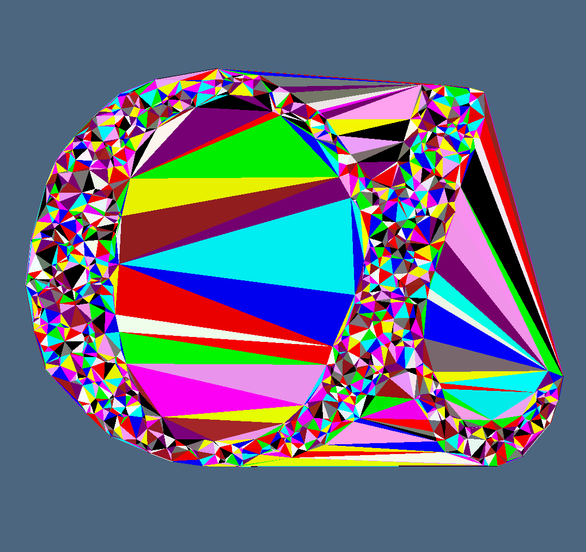
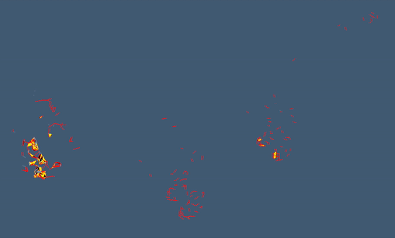

3.3 - Introduction to $\alpha$-Structures
Let as usual $S$ a set of $n$ sites in $\mathbb R^D$ (finite). Since we are interested in real situation we will restrict to the case $D \in \{2, 3\}$; however the following description could be simply enlarged for a general $D$ value.
Suppose we want to build is something like "the shape formed by these points". Of course it could be done in many ways: $\alpha$-shapes are one of them.
Suppose than that we want to take this $\alpha$-shape and we want to build its complete structure: in other words we want to evaluate each and every $d$-simplex (with $d \in [0, D]$) it could be made of; something like "the bricks this shape is made of". This problem also could be solved in many ways: $\alpha$-complexes are one of them.
As Edelbrunner and Mücke said in their paper [EM92] $\alpha$-shapes could be thinked as the following. Imagine a huge mass of ice-cream making up the space $\mathbb R^d$ and containing the points $S$ as "hard" chocolate pieces. Using one of these sphere-formed ice-cream spoons we carve out all parts of the ice-cream block we can reach without bumping into chocolate pieces, thereby even carving out holes in the inside (eg. parts not reachable by simply moving the spoon from the outside). We will eventually end up with a (not necessarily convex) object bounded by caps, arcs and points; we will call this object $\alpha$-hull of $S$. If we now straighten all "round" faces to triangles and line segments, we have an intuitive description of what is called the $\alpha$-shape of $S$, denoted by $\mathcal T$.
But what is $\alpha$ after all? In the ice-cream analogy above, $\alpha$ is the squared radius of the carving spoon. A very small value will allow us to eat up all of the ice-cream except the chocolate points themselves. Thus for $\alpha \to 0$ the $\alpha$ shape degenerates to the sites set $S$. On the other hand, a huge value of $\alpha$ will prevent us even from moving the spoon between two points since it is too large and we will never spoon up the ice-cream lying in the inside of the convex hull of $S$. Hence, the $\alpha$-shape becomes the convex hull of $S$ as $\alpha \to \infty$.

Figure 1: $\alpha$-structure over Delaunay Triangulation on 2D $\alpha$ symbol.
Geometrical Concept
We will shortly discuss all the geometrical concepts that are needed to understand what an $\alpha$-structure is.
$\alpha$-hulls and $\alpha$-diagrams
First of all we need to identify what the spoon of the introduction is.
For each $0 < \alpha < \infty$ let an $\alpha$-ball be an open ball with radius $\alpha$. We will identify with $B_x(\alpha)$ the $\alpha$-ball centered in $x$. For completenes we could therefore impose that $B_x(0)$ represents the point $x$. Now, a certain $\alpha$-ball $B$ (at a given location) is called empty if $B \cap S = \emptyset$.
We can then define what an $\alpha$-hull is, using the previous definition.
For each $0 < \alpha < \infty$ we define the $\alpha$-hull $\mathcal H_\alpha$ of $S$ as the complement of the union of all empty $\alpha$-balls:
\[ \mathcal H_\alpha := \overline{ \bigcup_{x \in \mathbb R^d} \{D_\alpha(x) \mid D_\alpha(x) \cap S = \emptyset \} }\]
It follows from the previous definition the following three facts:
- if $\alpha_1 \leq \alpha_2$ then $\mathcal H_{\alpha_1} \subseteq \mathcal H_{\alpha_2}$;
- for $\alpha\to\infty$ we obtain that $\mathcal H_\alpha$ corresponds to the convex hull of $S$;
- $\mathcal H_0 = S$ since only the sites are considered.
One more usefull concept related to what we are introducing is the $\alpha$-diagramm defined as follows
For each $0 < \alpha < \infty$ we define the $\alpha$-diagram $\mathcal U_\alpha$ of $S$ as the the union of all the $\alpha$-balls centered in the sites of $S$:
\[ \mathcal U_\alpha := \bigcup_{s \in S} D_\alpha(s)\]
It is pretty clear that there is a strict relation between $\mathcal H_\alpha$ and $\mathcal U_\alpha$. In fact a point $x$ belongs to $\mathcal U_\alpha$ if and only if $B_x(\alpha) \cap \mathcal H_\alpha \ne \emptyset$. Therefore we obtain the following relations
\[ \begin{split} x \in \mathcal U_\alpha \iff B_x(\alpha) \cap \mathcal H_\alpha \ne \emptyset\\ x \in \mathcal H_\alpha \iff B_x(\alpha) \subseteq \mathcal U_\alpha \end{split}\]
$\alpha$-Shapes and $\alpha$-Complexes
We have so far talked about sets. What we are interested in are however complex of simplices. We therefore drop the curved edges of $\alpha$-hulls in favor of straight lines.
What we have described take the name of $\alpha$-shape of $S$: we will denote it $\Sigma_\alpha(S)$ or, shortly, $\Sigma$. In fact it gives us a boundary of what is internal to the point cloud made of the Sites $S$ and what is and outsider. It is trivial to understand that $\Sigma$ is mainly made of $D-1$-simplices and it could not have $D$-simplices at all.
However $\Sigma$ comes with a notion of Delaunay Triangulation and, since the general position condition is satisfied by hypotesis, it follows that the polytope decomposition of the $\alpha$-hull is unique. We define:
The Delaunay Triangulation of $\Sigma_\alpha(S)$ takes the name of $\alpha$-complex of $S$: we will denote it $\mathcal A_\alpha(S)$ or, shortly, $\mathcal A$.
It then follows from the way we have defined it that if a $d$-polytope ($d$-cell) is in $\mathcal A$ then every cell it is made of is also inside $\mathcal A$.
$\alpha$-Filtration

Figure 2: $\alpha$-filtration of a 3D cat shape.
We now introduce the case of study of what happends if we vary the $\alpha$ value. In general this topic is strictly related to Persistent Homology (we will see in the next section).
The first observation we could make is that the bigger is the value $\alpha$ the more simplices get into the complex $\mathcal A$.
It is although pretty clear that if a simplex is in $\mathcal A$ for a certain $\alpha$ than it will be in $\mathcal A$ for every $\alpha' \geq \alpha$. It then makes sense to search for the first value $\alpha$ such that each single simplex $\sigma$ gets inside $\mathcal A$. We will define it as:
Let $\mathcal A_\infty(S) \equiv \mathcal D(S)$ the Delaunay complex of $S$. For each simplex $\sigma \in \mathcal D(S)$ we define the characteristical $\alpha$ of $\sigma$ like the infimum $\alpha$ such that $\sigma \in \mathcal A_\alpha(S)$:
\[ \alpha_\sigma = \inf_{\alpha \geq 0}\{\sigma \in \mathcal A_\alpha(S)\}\]
This last definition gives us a better way to build up the $\alpha$-Complex:
\[ \mathcal A_\alpha = \{\sigma \in \mathcal D(S) \mid \alpha_\sigma \leq \alpha\}\]
It is of particular interest note that the characteristical \alpha of each simplex is bigger or equal than those of the simplices (of lower degree) it is made of:
\[ \alpha_\sigma \geq \alpha_{\sigma'} \quad \forall \sigma' \subseteq \sigma\]
With this knowledge it is pretty clear that we can sort the simplices via their characteristical $\alpha$ like the comes in the $\alpha$-complex. We therefore could define what we call $\alpha$-Filtration:
Let $\mathcal D$ the Delaunay triangulation of a set of Sites $S$. We define an $\alpha$-Filtration of $S$ like the sequence of Complexes that grows accordingly to the $\alpha$ value, namely:
\[ \emptyset \ =\ K_0 \subseteq K_{\alpha_1} \subseteq K_{\alpha_2} \subseteq \dots \subseteq K_{\alpha_k} \ =\ \mathcal D\]
In particular this will be the key we use in our algorithm to evaluate the $\alpha$-structures. We will describe more precisely how to evaluate the characteristical $\alpha$ in the "Alpha Structures Implementation" section 4.2.
Other $\alpha$-structures
Since we have defined $\alpha$-complexes via Delaunay Triangulation it makes sense think that we could also define them via Regular Triangulation.
We can therefore divide $\alpha$-shapes into two families:
- Basic $\alpha$-shapes are based on the Delaunay triangulation.
- Weighted $\alpha$-shapes are based on the Regular Triangulation, a Delunay generalization where the euclidean distance is replaced by the power to weighted points.